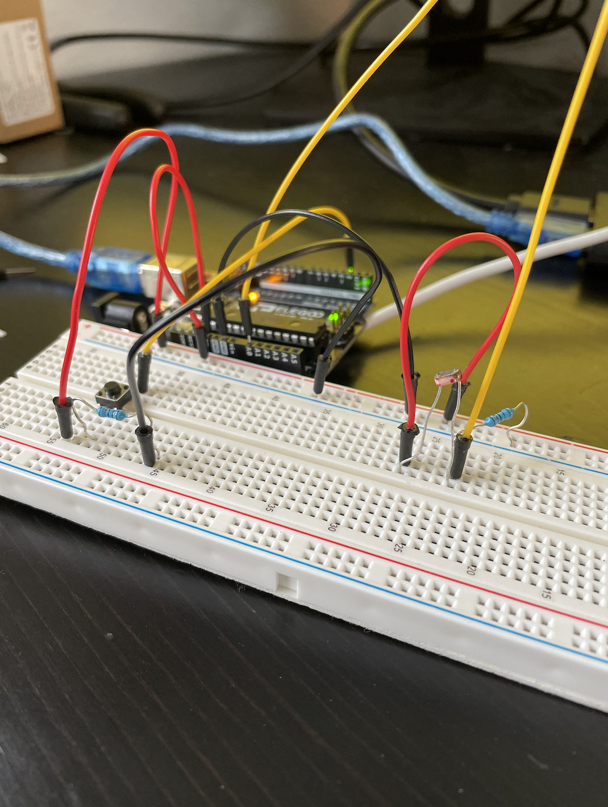

Here is the color response in action!

For this assignment I used a photoresistor and a button to communicate with a webpage!
For this assignment, I used a photoresistor and a pushbutton to send signals to a webpage that would change based on interaction with those inputs! Pushing the button will change the words in the upper left corner to say 'the button is pressed: YES'. Depending on how much light the photoresistor is receiving, the background of the webpage will change to indicate whether the photoresistor is in the dark, in full brightness, or somewhere in between!
Here is the schematic for my circuit setup! I used one 10k ohm resistor for both my photoresistor and my button.
Here is a photo of what my circuit setup looks like.
Here is what the whole setup looks like.
Here is the color response in action!

Here is the button response in action! I found that my button response was really laggy - I could not find any error in my code or setup that led to this, so I think it was a result of me running a lot of software on my poor MacBook Pro. :(